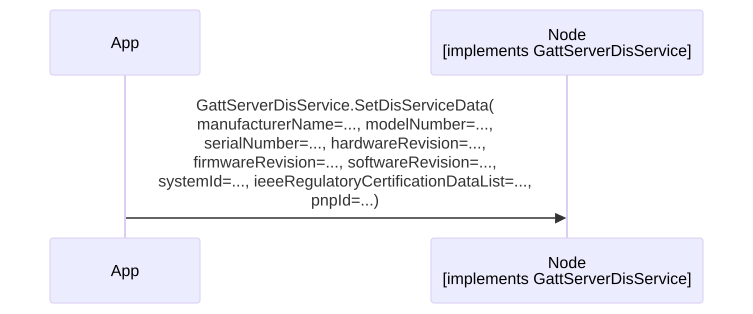

GattServerDisService
GattServerDisService publishes the Device Information Service (DIS) attributes exposed by the local GATT server. It is server-side (peripheral) functionality, independent of GattClient. The DIS is the Bluetooth SIG-adopted service with assigned uuid 0x180A; see the Bluetooth SIG Device Information Service specification.
Startup
Typically called once at startup, before advertising begins, so that remote GATT clients read the intended DIS attributes on their first ReadCharacteristic. May also be called on a live connection to update the exposed values; the update takes effect on the peer’s next DIS read.
Per-Method Sequence Diagrams
SetDisServiceData
Each field is a variable-length byte array capped by the bytes_size upper limit declared in Gatt.proto (see Echo Protocol); shorter values, including empty, are valid, and empty fields are not populated in the exposed DIS attributes. No response callback - the call returns Nothing and there is no paired response service.

Reference
Service definition: services/ble/Gatt.proto.
View Gatt.proto inline
syntax = "proto3";
import "EchoAttributes.proto";
package gatt;
option java_package = "com.philips.emil.protobufEcho";
option java_outer_classname = "GattProto";
// Attributes exposed by the Device Information Service (DIS).
// The DIS is a Bluetooth SIG-adopted service (assigned uuid 0x180A).
// See Bluetooth SIG Device Information Service specification.
message DisServiceData
{
bytes manufacturerName = 1 [(bytes_size) = 32];
bytes modelNumber = 2 [(bytes_size) = 32];
bytes serialNumber = 3 [(bytes_size) = 32];
bytes hardwareRevision = 4 [(bytes_size) = 32];
bytes firmwareRevision = 5 [(bytes_size) = 32];
bytes softwareRevision = 6 [(bytes_size) = 32];
bytes systemId = 7 [(bytes_size) = 8];
bytes ieeeRegulatoryCertificationDataList = 8 [(bytes_size) = 32];
bytes pnpId = 9 [(bytes_size) = 7];
}
// GATT server-side wrapper for the Bluetooth SIG Device Information Service (DIS, uuid 0x180A).
// State constraints:
// Values may be set in any link-layer state; they update the local GATT database and are surfaced on the peer's next DIS read.
// Callback constraints:
// This service has no response service; methods do not result in any callbacks.
// Startup:
// GattServerDisService has no per-service startup handshake of its own. The service becomes callable
// once the paired GapPeripheral service reports CurrentState(standby) after startup.
service GattServerDisService
{
option (service_id) = 132;
rpc SetDisServiceData(DisServiceData) returns(Nothing) { option (method_id) = 1; }
}
// Attribute MTU size negotiated via the ATT Exchange MTU procedure.
// See Bluetooth Core Specification v6.3, Vol 3, Part F, Section 3.4.2 and Vol 3, Part G, Section 4.3.
message MtuSize
{
uint32 value = 1;
}
// ATT attribute handle (16-bit).
// See Bluetooth Core Specification v6.3, Vol 3, Part F, Section 3.2.2.
message Handle
{
uint32 value = 1;
}
// A GATT attribute value paired with its handle.
// See Bluetooth Core Specification v6.3, Vol 3, Part F, Section 3.2.
message AttributeData
{
Handle handle = 1;
bytes data = 2 [(bytes_size) = 512];
}
// Inclusive range of ATT attribute handles used by the GATT discovery procedures.
// See Bluetooth Core Specification v6.3, Vol 3, Part G, Sections 4.4-4.7.
message HandleRange
{
Handle startHandle = 1;
Handle endHandle = 2;
}
// GATT service definition: 16 or 128-bit UUID and the inclusive handle range that contains its declarations.
// See Bluetooth Core Specification v6.3, Vol 3, Part G, Section 3.1.
message Service
{
bytes uuid = 1 [(bytes_size) = 16];
HandleRange handles = 2;
}
// GATT characteristic: UUID, declaration and value handles, and the properties bitfield.
// See Bluetooth Core Specification v6.3, Vol 3, Part G, Section 3.3.
// The `properties` field encodes the Characteristic Properties bitfield defined in
// Bluetooth Core Specification v6.3, Vol 3, Part G, Section 3.3.1.1:
// 0x01 = broadcast
// 0x02 = read
// 0x04 = writeWithoutResponse
// 0x08 = write
// 0x10 = notify
// 0x20 = indicate
// 0x40 = authenticatedSignedWrites
// 0x80 = extendedProperties
message Characteristic
{
bytes uuid = 1 [(bytes_size) = 16];
Handle declarationHandle = 2;
Handle valueHandle = 3;
uint32 properties = 4;
}
// GATT characteristic descriptor. See Bluetooth Core Specification v6.3, Vol 3, Part G, Section 3.3.3.
// ('Descriptor' keyword is not allowed by Echo code generator, hence the abbreviated name.)
message Descriptr
{
bytes uuid = 1 [(bytes_size) = 16];
Handle handle = 2;
}
message ReadResult
{
AttributeData data = 1;
}
// Outcome of a GATT client operation.
// error typically corresponds to an ATT_ERROR_RSP (Bluetooth Core Specification v6.3, Vol 3, Part F, Section 3.4.1.1)
// or a client-side rejection before the request reaches the peer.
enum OperationStatus
{
success = 0;
// Returned when WriteCharacteristicWithoutResponse can't be processed due to a busy connection. The operation can be retried.
retry = 1;
error = 2;
}
message OperationResult
{
OperationStatus value = 1;
}
// CCCD (Client Characteristic Configuration Descriptor) bit field values for use with WriteDescriptor.
// See Bluetooth Core Specification v6.3, Vol 3, Part G, Section 3.3.3.3:
// bit 0 = notifications enabled
// bit 1 = indications enabled
enum CccdSetting
{
none = 0;
notificationEnabled = 1;
indicationEnabled = 2;
}
// ==================================================
// GATT CLIENT SERVICE DEFINITION
// ==================================================
// State constraints:
// Unless otherwise specified, all methods require an active connection.
// Callback constraints:
// Unless otherwise specified, methods do not by default result in any callbacks on the response service.
// An operation is in progress from its invocation until its listed "Expected response" has been received.
// Unless otherwise specified, only one operation may be in progress at any time.
// Non-conformance will result in an assertion.
// Discovery constraints:
// Discovery must follow the sequence: Service -> Characteristic -> Descriptor.
// Each step must complete (indicated by the corresponding *Complete response) before initiating the next.
// The maximum number of items returned depends on the configuration.
// Connection loss:
// Any pending operation (discovery, MTU exchange, or read/write) is implicitly cancelled.
// For any pending operation, the listed "Expected response" is guaranteed to be delivered with an error status.
// Startup:
// GattClient has no per-service startup handshake of its own. The service becomes callable
// once the paired GAP service reports CurrentState(connected) for the peer of interest.
// Calling any GattClient method without an active connection results in an assertion.
// Reference:
// All GATT procedures below map to Bluetooth Core Specification v6.3, Vol 3, Part G
// (Generic Attribute Profile). ATT-layer PDUs referenced in Response Sequences are
// defined in Vol 3, Part F (Attribute Protocol).
// ==================================================
service GattClient
{
option (service_id) = 134;
// Allowed states: connected
// Expected response: GattClientResponse.OperationComplete
// Additional responses: GattClientResponse.MtuSizeExchangeComplete
// Description: Requests the MTU size to be increased from the default, for better throughput.
// May only be called once per connection.
// The effective MTU size is implementation defined.
// See Bluetooth Core Specification v6.3, Vol 3, Part G, Section 4.3 (Exchange MTU).
// Response Sequences:
// On successful exchange: GattClientResponse.MtuSizeExchangeComplete -> GattClientResponse.OperationComplete(success)
// On peer / L2CAP failure: GattClientResponse.OperationComplete(error)
rpc MtuSizeExchangeRequest(Nothing) returns (Nothing) { option (method_id) = 1; }
// Allowed states: connected
// Expected response: GattClientResponse.ServiceDiscoveryComplete
// Additional responses: zero or more GattClientResponse.ServiceDiscovered
// Description: Discovers all services.
// First step of the Service -> Characteristic -> Descriptor discovery sequence.
// See Bluetooth Core Specification v6.3, Vol 3, Part G, Section 4.4 (Primary Service Discovery).
// Response Sequences:
// On completion: zero or more GattClientResponse.ServiceDiscovered -> GattClientResponse.ServiceDiscoveryComplete(success)
// On peer / L2CAP failure: GattClientResponse.ServiceDiscoveryComplete(error)
rpc StartServiceDiscovery(Nothing) returns (Nothing) { option (method_id) = 2; }
// Allowed states: connected
// Pre-conditions: Prior GattClientResponse.ServiceDiscovered supplies the service's handle range.
// Expected response: GattClientResponse.CharacteristicDiscoveryComplete
// Additional responses: zero or more GattClientResponse.CharacteristicDiscovered
// Description: Discovers all characteristics within a single service's handle range.
// Must be called once per discovered service, after GattClientResponse.ServiceDiscoveryComplete.
// The handle range should be the service's start and end handles.
// See Bluetooth Core Specification v6.3, Vol 3, Part G, Section 4.6 (Characteristic Discovery).
// Response Sequences:
// On completion: zero or more GattClientResponse.CharacteristicDiscovered -> GattClientResponse.CharacteristicDiscoveryComplete(success)
// On peer / L2CAP failure: GattClientResponse.CharacteristicDiscoveryComplete(error)
rpc StartCharacteristicDiscovery(HandleRange) returns (Nothing) { option (method_id) = 3; }
// Allowed states: connected
// Pre-conditions: Prior GattClientResponse.CharacteristicDiscovered supplies the characteristic's valueHandle.
// Expected response: GattClientResponse.DescriptorDiscoveryComplete
// Additional responses: zero or more GattClientResponse.DescriptorDiscovered
// Description: Discovers all descriptors within the given handle range of a characteristic.
// The handle range spans from the characteristic's value handle to the next characteristic's declaration handle - 1
// (or the service's end handle for the last characteristic in a service).
// See Bluetooth Core Specification v6.3, Vol 3, Part G, Section 4.7 (Characteristic Descriptor Discovery).
// Response Sequences:
// On completion: zero or more GattClientResponse.DescriptorDiscovered -> GattClientResponse.DescriptorDiscoveryComplete(success)
// On peer / L2CAP failure: GattClientResponse.DescriptorDiscoveryComplete(error)
rpc StartDescriptorDiscovery(HandleRange) returns (Nothing) { option (method_id) = 4; }
// Allowed states: connected
// Pre-conditions: valueHandle known from a prior GattClientResponse.CharacteristicDiscovered.
// Expected response: GattClientResponse.OperationComplete
// Additional responses: GattClientResponse.ReadCharacteristicResponse
// Description: Reads the value of a characteristic from the GATT server.
// See Bluetooth Core Specification v6.3, Vol 3, Part G, Section 4.8 (Characteristic Value Read).
// Response Sequences:
// On successful read: GattClientResponse.ReadCharacteristicResponse -> GattClientResponse.OperationComplete(success)
// On peer-side rejection (permissions, invalid handle, insufficient authentication): GattClientResponse.OperationComplete(error)
rpc ReadCharacteristic(Handle) returns (Nothing) { option (method_id) = 5; }
// Allowed states: connected
// Pre-conditions: valueHandle known from a prior GattClientResponse.CharacteristicDiscovered.
// Expected response: GattClientResponse.OperationComplete
// Description: Writes the value of a characteristic to the GATT server.
// See Bluetooth Core Specification v6.3, Vol 3, Part G, Section 4.9 (Characteristic Value Write).
// Response Sequences:
// On successful write: GattClientResponse.OperationComplete(success)
// On peer-side rejection: GattClientResponse.OperationComplete(error)
rpc WriteCharacteristic(AttributeData) returns (Nothing) { option (method_id) = 6; }
// Allowed states: connected
// Pre-conditions: valueHandle known from a prior GattClientResponse.CharacteristicDiscovered.
// Expected response: GattClientResponse.WriteCharacteristicWithoutResponseComplete
// Description: Writes the value of a characteristic to the GATT server without requiring a response.
// This method does not guarantee that the server has received the value.
// May be called while other operations are in progress, except for another WriteCharacteristicWithoutResponse operation.
// See Bluetooth Core Specification v6.3, Vol 3, Part G, Section 4.9.1 (Write Without Response).
// Response Sequences:
// On queued locally: GattClientResponse.WriteCharacteristicWithoutResponseComplete(success). success only means the command was queued locally; the peer never acknowledges an ATT_WRITE_CMD.
// On transient bearer backpressure: GattClientResponse.WriteCharacteristicWithoutResponseComplete(retry). The App may re-submit the same call.
// On client-side rejection (invalid handle, permission failure): GattClientResponse.WriteCharacteristicWithoutResponseComplete(error)
rpc WriteCharacteristicWithoutResponse(AttributeData) returns (Nothing) { option (method_id) = 7; }
// Allowed states: connected
// Pre-conditions: descriptor handle known from a prior GattClientResponse.DescriptorDiscovered.
// Expected response: GattClientResponse.OperationComplete
// Additional responses: GattClientResponse.ReadDescriptorResponse
// Description: Reads the value of a descriptor from the GATT server.
// See Bluetooth Core Specification v6.3, Vol 3, Part G, Section 4.12.1 (Read Characteristic Descriptor).
// Response Sequences:
// On successful read: GattClientResponse.ReadDescriptorResponse -> GattClientResponse.OperationComplete(success)
// On peer-side rejection: GattClientResponse.OperationComplete(error)
rpc ReadDescriptor(Handle) returns (Nothing) { option (method_id) = 8; }
// Allowed states: connected
// Pre-conditions: descriptor handle known from a prior GattClientResponse.DescriptorDiscovered.
// Expected response: GattClientResponse.OperationComplete
// Description: Writes the value of a descriptor to the GATT server.
// For a CCCD (uuid 0x2902), the data bytes select the notification / indication mode:
// 0x0000 = disabled, 0x0100 = notifications enabled, 0x0200 = indications enabled, 0x0300 = both enabled.
// See Bluetooth Core Specification v6.3, Vol 3, Part G, Section 4.12.3 (Write Characteristic Descriptor) and Section 3.3.3.3 (CCCD).
// Response Sequences:
// On successful write: GattClientResponse.OperationComplete(success)
// On peer-side rejection: GattClientResponse.OperationComplete(error)
rpc WriteDescriptor(AttributeData) returns (Nothing) { option (method_id) = 9; }
// Allowed states: connected
// Pre-conditions: A prior GattClientResponse.IndicationReceived callback. Indications must be enabled on the target characteristic (WriteDescriptor with data=0x0200 to its CCCD).
// Description: Must be called for every GattClientResponse.IndicationReceived to acknowledge the indication.
// Otherwise the peer stalls waiting for ATT_HANDLE_VALUE_CFM.
// May be called while other operations are in progress.
// See Bluetooth Core Specification v6.3, Vol 3, Part G, Section 4.11 (Characteristic Value Indications) and Vol 3, Part F, Section 3.4.7.3 (Handle Value Confirmation).
rpc IndicationDone(Nothing) returns (Nothing) { option (method_id) = 10; }
}
service GattClientResponse
{
option (service_id) = 135;
// Expected states: connected
// Triggered by: GattClient.MtuSizeExchangeRequest
// Description: Reports the negotiated MTU size.
rpc MtuSizeExchangeComplete(MtuSize) returns (Nothing) { option (method_id) = 1; }
// Expected states: connected
// Triggered by: GattClient.StartServiceDiscovery (for each discovered service)
// Description: Reports a single discovered service, including its UUID and handle range.
rpc ServiceDiscovered(Service) returns (Nothing) { option (method_id) = 2; }
// Expected states: connected
// Triggered by: GattClient.StartServiceDiscovery (on completion)
// Description: Signals that service discovery has finished.
rpc ServiceDiscoveryComplete(OperationResult) returns (Nothing) { option (method_id) = 3; }
// Expected states: connected
// Triggered by: GattClient.StartCharacteristicDiscovery (for each discovered characteristic)
// Description: Reports a single discovered characteristic, including its UUID, handles, and properties.
rpc CharacteristicDiscovered(Characteristic) returns (Nothing) { option (method_id) = 4; }
// Expected states: connected
// Triggered by: GattClient.StartCharacteristicDiscovery (on completion)
// Description: Signals that characteristic discovery has finished.
rpc CharacteristicDiscoveryComplete(OperationResult) returns (Nothing) { option (method_id) = 5; }
// Expected states: connected
// Triggered by: GattClient.StartDescriptorDiscovery (for each discovered descriptor)
// Description: Reports a single discovered descriptor, including its UUID and handle.
rpc DescriptorDiscovered(Descriptr) returns (Nothing) { option (method_id) = 6; }
// Expected states: connected
// Triggered by: GattClient.StartDescriptorDiscovery (on completion)
// Description: Signals that descriptor discovery has finished.
rpc DescriptorDiscoveryComplete(OperationResult) returns (Nothing) { option (method_id) = 7; }
// Expected states: connected
// Triggered by: GattClient.ReadCharacteristic
// Description: Returns the value read from the characteristic.
rpc ReadCharacteristicResponse(ReadResult) returns (Nothing) { option (method_id) = 8; }
// Expected states: connected
// Triggered by: GattClient.ReadDescriptor
// Description: Returns the value read from the descriptor.
rpc ReadDescriptorResponse(ReadResult) returns (Nothing) { option (method_id) = 9; }
// Expected states: connected
// Triggered by: GattClient.MtuSizeExchangeRequest, GattClient.ReadCharacteristic, GattClient.WriteCharacteristic, GattClient.ReadDescriptor, GattClient.WriteDescriptor
// Description: Reports the outcome of an MTU exchange, read, or write operation.
rpc OperationComplete(OperationResult) returns (Nothing) { option (method_id) = 10; }
// Expected states: connected
// Triggered by: Remote GATT server sending an indication
// Description: Indicates that an attribute value has changed on the GATT server, and must be acknowledged by the client.
rpc IndicationReceived(AttributeData) returns (Nothing) { option (method_id) = 11; }
// Expected states: connected
// Triggered by: Remote GATT server sending a notification
// Description: Notifies that an attribute value has changed on the GATT server.
rpc NotificationReceived(AttributeData) returns (Nothing) { option (method_id) = 12; }
// Expected states: connected
// Triggered by: GattClient.WriteCharacteristicWithoutResponse
// Description: Reports whether a write without response command was successfully queued by the GATT client for transmission to the GATT server.
// Success indicates the request was processed by the GATT client, but does not guarantee success on the GATT server side.
rpc WriteCharacteristicWithoutResponseComplete(OperationResult) returns (Nothing) { option (method_id) = 13; }
}